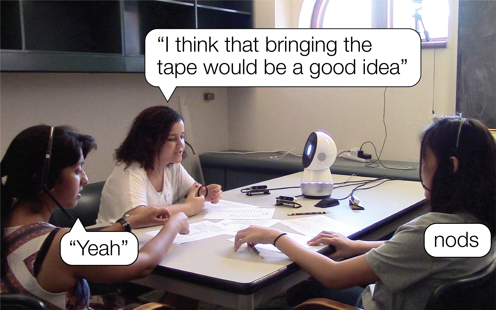
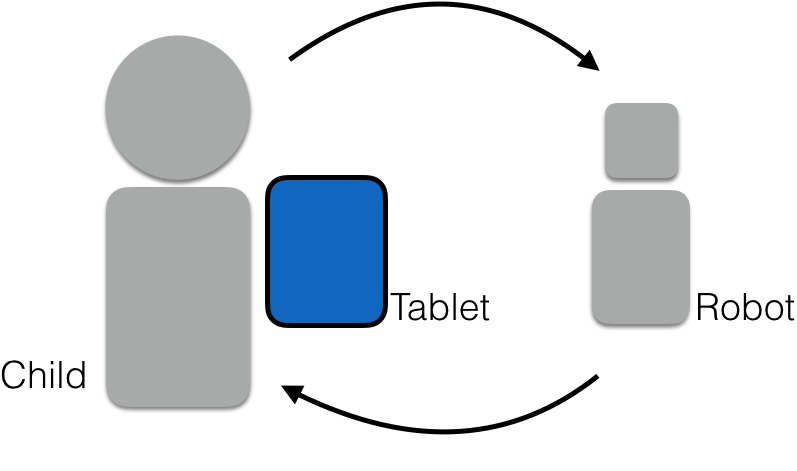
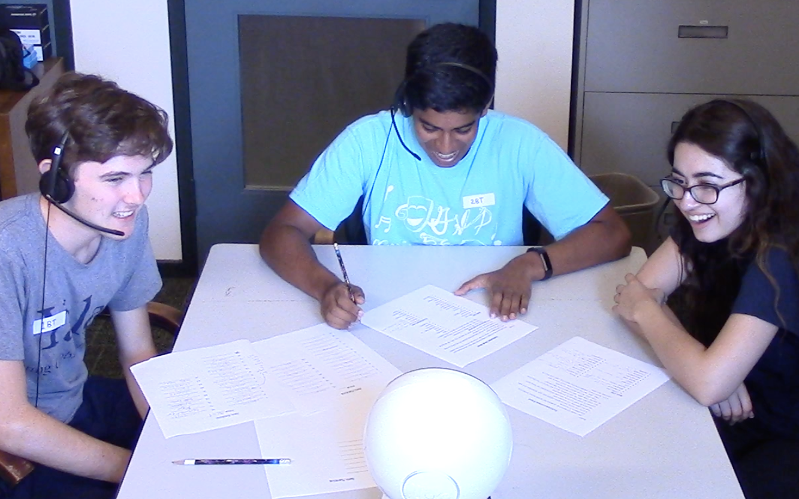
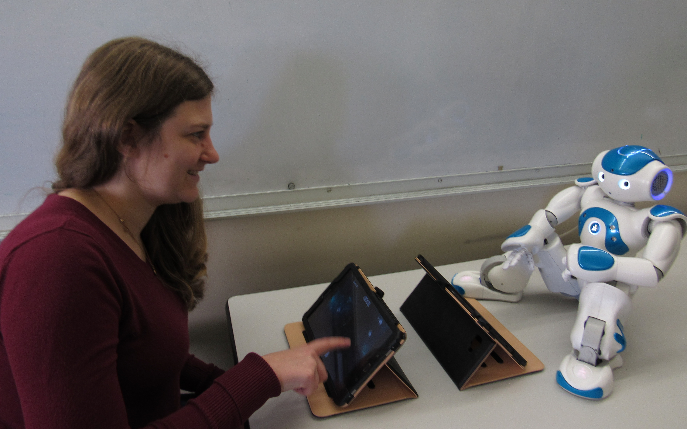
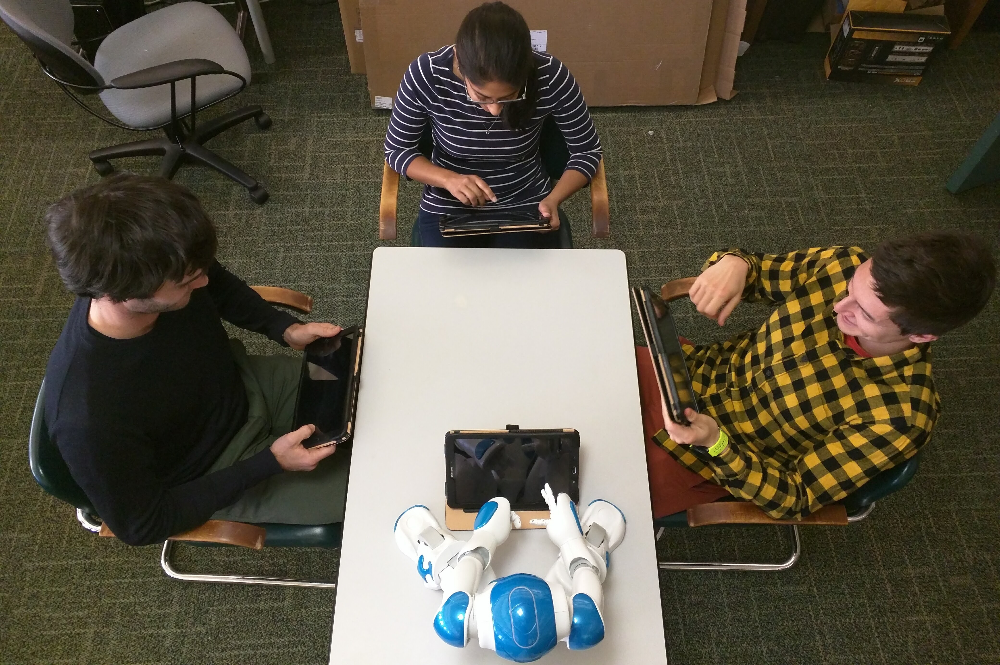
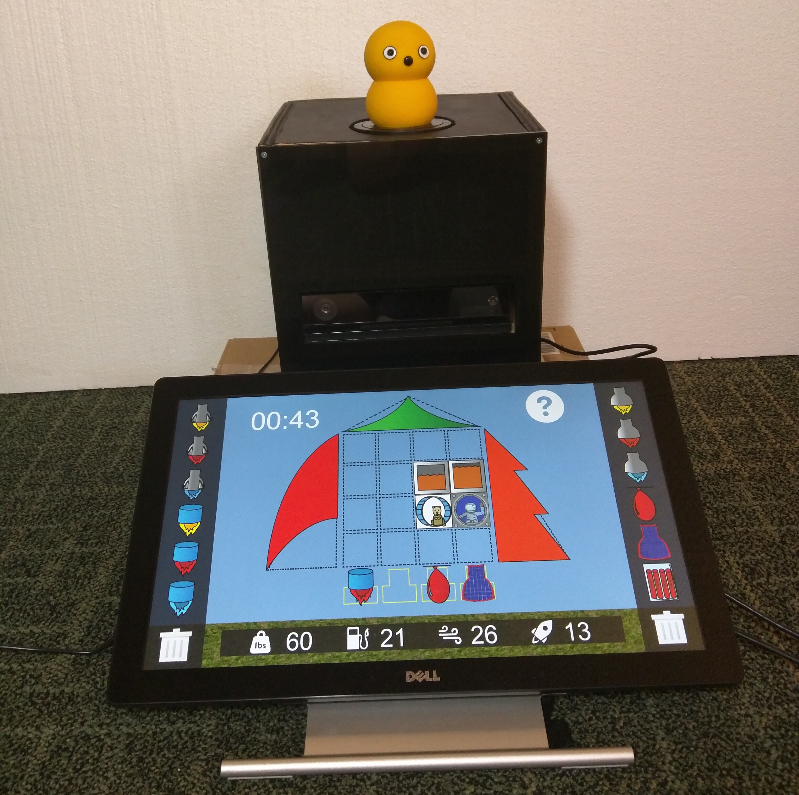

I develop robots that improve the performance of human-robot teams by shaping team dynamics to promote inclusion, trust, and cohesion. My work focuses on (1) developing data-driven computational models to link low-level social cues to team dynamics and inform intelligent robot decision making and (2) studying how a robot can shape key team dynamics through human subjects experiments.
Modeling Social Team Dynamics
Using Backchannels to Model Group Dynamics

Currently, group dynamics such as psychological safety, cohesion, and trust are measured through surveys and questionnaires, and there are currently no real-time systems that can detect group characteristics that have been shown to be critical to group success. I am currently investigating the correlation of backchannels (e.g. "yeah", "mm-hmm", nodding) in high-level group dynamics, and am in the process of building a real-time system that can both capture instances of backchannels and, from those backchannels, predict the current group dynamics.
Taking Affective States Into Account in Robot Decision Making Policies

For robots that interact with people, it is critical that their decision making policies take into account the social and affective states of the people with whom they are interacting.
One example of this is one-on-one robot tutoring.
Tutoring robots must be aware of the student's math knowledge (mental state) as well as their engagement with the task (engagement state).
My colleague, Aditi Ramachandran, and I formulated the problem of selecting the right help for a student, accounting for both their mental and engagement states using a partially observable Markov decision process. We evaluated this approach through a between-subjects field study with 4th grade students receiving one-on-one tutoring from a robot over 5 sessions. This work was published at AAAI 2019.
My colleague, Aditi Ramachandran, and I formulated the problem of selecting the right help for a student, accounting for both their mental and engagement states using a partially observable Markov decision process. We evaluated this approach through a between-subjects field study with 4th grade students receiving one-on-one tutoring from a robot over 5 sessions. This work was published at AAAI 2019.
Automatically Detecting Social Dominance in Children
As robots become more widely used in educational contexts, there is an increasing need to understand group dynamics and for robots to tailor their interactions to individual differences between children. One important factor in group interactions is social dominance, which is expressed through both verbal and nonverbal behaviors.
I explored a method for determining whether a child in a group interaction is 'high' or 'low' in social dominance based on domain-independent verbal and nonverbal behaviors. I implemented several machine learning models to classify the social dominance levels of children interacting with social robots. This work was published at ICMI 2015.
I explored a method for determining whether a child in a group interaction is 'high' or 'low' in social dominance based on domain-independent verbal and nonverbal behaviors. I implemented several machine learning models to classify the social dominance levels of children interacting with social robots. This work was published at ICMI 2015.
Shaping Team Dynamics
Investigating a Robot's Influence on the Inclusion in Human Members of a Human-Robot Team

Inclusion is critical in human teams, and has been shown to be linked to team member commitment as well as team performance. As social robots join human teams, they have the ability to influence the perceived inclusion of their fellow human team members.
I have investigated two strategies to improve the inclusion of the human members of a human-robot team: 1) a specialized role to interact with the robot and 2) supportive utterances from the robot. I discovered that a specialized role to interact with a robot can lead to decreased perceptions of inclusion, however, a robot’s supportive utterances demonstrated an increase of verbal contribution in human team members who were more excluded in a collaborative task. This work will be published at HRI 2020.
I have investigated two strategies to improve the inclusion of the human members of a human-robot team: 1) a specialized role to interact with the robot and 2) supportive utterances from the robot. I discovered that a specialized role to interact with a robot can lead to decreased perceptions of inclusion, however, a robot’s supportive utterances demonstrated an increase of verbal contribution in human team members who were more excluded in a collaborative task. This work will be published at HRI 2020.
Repairing Trust after a Robot Trust Violation

Trust is a critical component of human-robot teaming. When robots make errors in their interactions with people (e.g. overheating, failing to recognize speech, running into obstacles), a robot's successful repair of trust will be essential to future interaction.
I investigated the efficacy of both the trust violation framing (competence or integrity) and the trust repair strategy (denial or apology) in a robot's trust repair attempt with a person in a 2x2 between subjects study. Please consult the paper to examine our results. This work was published at HRI 2019.
I investigated the efficacy of both the trust violation framing (competence or integrity) and the trust repair strategy (denial or apology) in a robot's trust repair attempt with a person in a 2x2 between subjects study. Please consult the paper to examine our results. This work was published at HRI 2019.
Influencing Trust-Related Human Behavior through a Robot's Vulnerable Expressions

Trust is also a critical ingredient to positive team dynamics and performance and can be described as the willingness of team members to be vulnerable with one another. I found that human team members in a group with a robot making vulnerable comments, as opposed to neutral comments, were more likely to display vulnerable behavior (e.g. explaining a mistake) to their fellow human team members in the aftermath of a team member’s error in a collaborative game. Through these findings, I was the first to demonstrate that a robot’s behavior can influence how the people in the group interact with one another: the human team members displayed more trusting behavior toward their fellow human team members if the robot they interacted with modeled trust and vulnerability. This work was published at HRI 2018.
Examining the Influence of Robot Relationship and Task Focused Questions on Collaborative Performance

Cohesion and collaboration are skills necessary to teamwork that begin to emerge around the age of 5. To examine possible ways a robot can influence the cohesion between team members as collaborative skills are being developed, I investigated the influence of task-focused and relationship-focused discussion questions administered by a robot companion during a collaborative task completed by two children. Although the question type did not influence ratings on a cohesion questionnaire, I found that relationship-focused questions, as opposed to task-focused questions, led children to have higher perceptions of their team’s performance. This work was published at RO-MAN 2016.